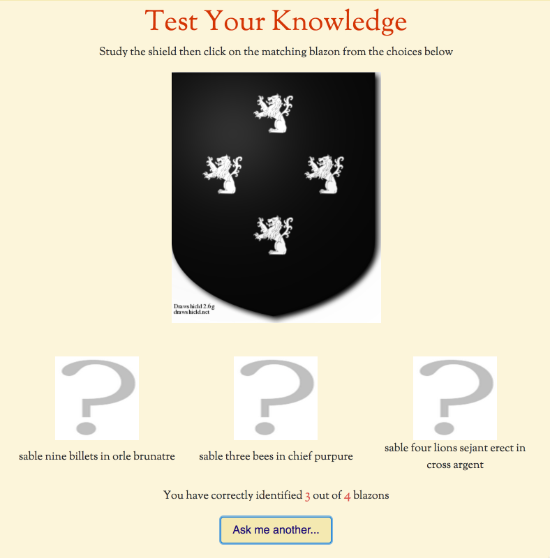

More Drawshield Stuff!
Apologies for posting a lot about Drawshield recently but many recent projects have come to fruition and I wanted to share them with you, hence:
- The Quiz Returns! (And this time with scoring!)
http://drawshield.net/quiz
- French to English Blazonry translation
http://drawshield.net/translate
- More charges added to the graphical shield builder
http://drawshield.net/build
- More visible error messages and a "report error" button for shield creation from blazons
http://drawshield.net/create
- Stuck for inspiration? View a random page from the Heraldry reference section
http://drawshield.net/reference/random.php
I have more ideas and reference works in preparation but have to concentrate on the day job for a while.
Hope this is useful to you,
All the best,
Karl

More Drawshield Stuff!
Apologies for posting a lot about Drawshield recently but many recent projects have come to fruition and I wanted to share them with you, hence:
- The Quiz Returns! (And this time with scoring!) http://drawshield.net/quiz
- French to English Blazonry translation http://drawshield.net/translate
- More charges added to the graphical shield builder http://drawshield.net/build
- More visible error messages and a "report